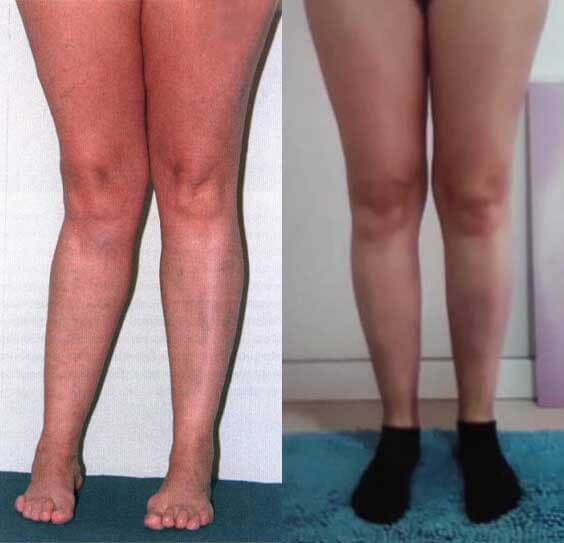

MUDANÇA DE VIDA: Um estudante de medicina português inventa um produto único que pode eliminar completamente problemas nas articulações! Sem cirurgia!
- SAÚDE
- SUPLEMENTOS NUTRICIONAIS
- VITAMINAS
- DOR NAS ARTICULAÇÕES
- ARTICULAÇÕES SAUDÁVEIS

Isso não é tudo antes e depois?
Este é Luís Henrique Barreiro, o melhor aluno de Medicina da Universidade de Lisboa.
Ele foi capaz de eliminar completamente os problemas nas articulações! Sem cirurgia!
Sua especialidade médica é reumatologia. E enquanto trabalhava em sua dissertação, ele se deparou com uma nova maneira de tratar as articulações da qual ninguém nunca tinha ouvido falar.
Para ter certeza de que não era apenas uma coincidência, ele pediu a sua tia Maria Antonieta Tavares para tentar esse método.
Maria Antonieta se livrou da artrite dolorosa em sete dias.
O vizinho de Luís Henrique também tentou este novo curso integrado:
Luís Henrique conseguiu curar o segundo estágio da osteoartrite do joelho em 10 dias.
E um dos participantes de sua tese de doutorado, Rodrigo, obteve excelentes resultados:
Rodrigo curou seu joelho inchado com o método de Luís Henrique.
Até mesmo os professores e professoras de Luís Henrique ficaram chocados com seu novo método.

No palco, ele explicou à comunidade científica:
"Eu posso convencer qualquer um a alcançar resultados semelhantes. Se você sofre de dor nas articulações... Você PODE se recuperar totalmente. Nenhuma cirurgia ou outros procedimentos são necessários. Graças a este instrumento único".
Seus professores e seus colegas ficaram chocados. Tudo parecia falso para eles.
Mas Luís Henrique provou que eles estavam errados.
Vamos falar em detalhes sobre o produto inventado por Luís Henrique.
Como Luís Henrique fez essa descoberta?
Luís Henrique descobriu este produto revolucionário para dores nas articulações durante o seu segundo ano na Universidade de Lisboa.
Devido a problemas hereditários nas articulações, agravados pelos árduos estudos e pela falta de dinheiro para o curso necessário, sofria de dores crescentes nas pernas. Como um futuro reumatologista, ele queria inventar um produto para ajudar a si mesmo e a todas as pessoas com doenças articulares.

Devido ao fato de que ele estava em uma cadeira de rodas, sua vida privada também era ruim ...
"Um dia ele estava no Departamento de Livros Raros da Biblioteca da Universidade procurando material para seus estudos.
Ele se deparou com um livro antigo que descrevia um método de pesquisa interessante, mas já esquecido: "um método de restauração e curso das articulações".
Como Luís Henrique estava em uma cadeira de rodas, ele sabia que tinha que fazer algo a respeito."
Um novo método de recuperação articular
Ele teve que usar esse novo método de recuperação articular.
Inicialmente, ele tentou criar o produto necessário com meios improvisados, misturando sulfatos e vitaminas. Mas infelizmente o resultado não foi o esperado e sem equipamentos especiais foi difícil e muito caro.

Mas ele estava se movendo na direção certa, e esse método foi desenvolvido.
Felizmente, teve acesso ao laboratório da Faculdade de Medicina de Lisboa, o que lhe permitiu experimentar este método.
O método de restauração das articulações era simples; o laboratório tinha todos os ingredientes necessários.
Após meses de tentativa e erro
... Luís Henrique conseguiu reunir a combinação perfeita de ingredientes.
Tudo isso foi necessário para testar este método de curso articular.
Luís Henrique testou sua pesquisa em si mesmo. Após o primeiro dia de curso , ele se sentiu melhor. O produto já mostrou resultados surpreendentes
No segundo dia, ele conseguiu ficar sozinho e sem apoio.
Uma semana depois, ele caminhou 20 metros sozinho.
E finalmente, após 14 dias, ele começou a correr pelo estádio e voltou a esquiar.

Em apenas 14 dias, ele restaurou totalmente suas articulações.
Como funciona este método de recuperação articular?
Em nosso corpo existe uma substância: a glucosamina, e isso contribui para articulações saudáveis.
A glucosamina é um material de construção para cartilagem, tendões e ligamentos. Este componente aumenta a elasticidade das articulações, reduz a destruição da cartilagem, aumenta a mobilidade e alivia os sintomas de dor.
Meu método melhora a síntese de glucosamina e ajuda a assimilar melhor e mais rapidamente essa substância. Tudo isso leva a uma redução no tempo necessário para a restauração do tecido cartilaginoso e, portanto, também do tecido articular.
A pesquisa que encontrei no livro estava relacionada aos primeiros experimentos na década de 1980. Um paciente que seguiu o novo curso articular foi capaz de se livrar da dor e da crise em 10 dias.
"Mas a comunidade científica estava assustada na época; não estava pronto para tais resultados.
Por causa do medo da responsabilidade, o experimento foi encoberto e logo esquecido."
Mas agora você também pode curar suas articulações em poucos dias.
... E se houver problemas com as articulações?
Não se preocupe.
Mesmo que você tenha grandes problemas nas articulações. Mesmo que você já tenha passado muitos anos tratando-os.
Isso pode ser facilmente corrigido com um novo método de curso articular.
Tomemos, por exemplo, Pedro Lucas, 62 anos.
Nos últimos cinco anos, ele tem lutado com inchaço e dor no joelho. Mas depois de usar o nosso método. ele pode andar de bicicleta, caminhar longas distâncias e subir escadas.
E, ao mesmo tempo, esqueceu todas as suas preocupações.
Dê uma olhada em como Pedro Lucas anda de bicicleta:
E ainda há Andrea, de 50 anos, que tem três netos e quer passar mais tempo com eles.
Em apenas sete dias, ela conseguiu curar a parte inferior das costas. Agora ela está saudável e feliz e brinca com seus netos.

E depois há Walter, de 49 anos, cujas articulações começaram a atormentá-lo depois de 40 anos.
Você não vai acreditar! Mas depois do nosso curso completo, ele se lembrou de como era jogar futebol novamente.
Imagine ser capaz de andar muito novamente, exercitar-se, subir escadas e não precisar de ajuda externa. Ou como é se sentir tão saudável quanto um adolescente.
Um novo método de curso articular pode realizar todos os seus sonhos de uma vida ativa.
Problemas nas articulações não são sua culpa
Luís Henrique sempre se perguntou por que seu professor insiste em medicamentos e tratamentos potencialmente perigosos e caros.
Ao aprofundar sua pesquisa, ele se deparou com notícias chocantes.
A máfia farmacêutica e os reumatologistas de todo o mundo escondem a existência de medicamentos melhores, porque é mais lucrativo vender o produto do que um alívio temporário, e não uma cura completa!
Mas agora...
Este é o último recurso que você precisa.
Você nunca mais precisará de um creme para as articulações, uma injeção ou cirurgia novamente.
Como assim?
Quando Luís Henrique desenvolveu esse novo curso das articulações, ele precisava arranjar uma maneira que permitisse que as pessoas o usassem em suas vidas diárias.
Sua pesquisa o levou à descoberta de um componente secreto.
Este componente torna o novo método de curso articular disponível para o público em geral.
E pode ajudá-lo a curar suas articulações!
% de PACIENTES curados
- - Pessoas que usam métodos tradicionais de curso articular
- - Voluntários que testaram o novo método de curso articular
| 13% |
| 97% |
Você não obterá apenas resultados a curto prazo.
E se você está se perguntando onde você pode encontrar este produto...
... Você nunca encontrará HondroLife nas lojas, porque Luís Henrique acaba de concluir o desenvolvimento desta fórmula. Por esta razão, o seu médico provavelmente nunca mencionou este spray.
De agora em diante, você só pode viver uma vida ativa.
Luís Henrique e sua equipe acabaram de produzir os primeiros lotes deste spray.
Mas você DEVE SE APRESSAR, porque esse novo estoque se esgota rapidamente:
Imagine ser capaz de obter este spray antes que o lote atual seja esgotado.
Você pode esquecer o que são dores nas articulações e problemas de mobilidade.
Você pode fazer qualquer tipo de atividade física em qualquer idade
... e não se preocupe com dor nas articulações.
E você será mais feliz!
Mas por que Luís Henrique quer fazer esse spray?
Luís Henrique quer que outras pessoas tenham o mesmo sucesso
Ele só quer ajudar as pessoas a se curarem como ele foi curado. Este é o objetivo de sua vida como um futuro médico especializado no curso das articulações.
Ele tinha que encontrar algo que funcionasse para o resto de sua vida.
Em breve você também verá os resultados da cura que você nunca viu antes.
Sem cirurgia.
Sem pomada ou injeção cara.
Imagine que você não sente dor e se move sem desconforto.
O que é esse ingrediente?
Estas são as vitaminas E e B3.
Eles ajudam a garantir que a glucosamina ingerida com alimentos seja absorvida melhor e mais rapidamente e que as articulações sejam restauradas.
No tecido cartilaginoso, a glucosamina é convertida em substâncias que são necessárias para as articulações.
As vitaminas E e B3 têm um efeito positivo em todo o organismo.
As vitaminas E e B3 não só melhoram a absorção de glucosamina, mas também aumentam os níveis de glucosamina no corpo.
Isso ajuda o corpo a ter sempre a quantidade certa de substâncias para articulações saudáveis.
... E o que poderia ser melhor?
Para excelentes resultados, não há necessidade de comprar pomadas caras ou realizar operações.
Olhe para este teste, que foi feito em dois pacientes.
Luís Henrique fez com que uma mulher usasse uma pomada da farmácia durante um mês, outra mulher usou o spray HondroLife com vitaminas E e B3.
A mulher, que foi tratada com uma pomada de farmácia, não se livrou da dor:
A mulher que usou o spray HondroLife...
... curou completamente sua artrite

Um dos poucos de seus professores que reconheceram as realizações de Luís Henrique disse:

"Este spray HondroLife é revolucionário. Fácil de usar. E você obtém os resultados mais rápidos do curso sem cirurgia e pomadas caras. Também não há efeitos colaterais. É altamente recomendado."
Diga adeus às pomadas farmacêuticas, terapias, injeções e operações...
... uma cura melhor e mais fácil está agora disponível.
Mas você pode estar se perguntando como você pode fazer isso em sua vida diária.
É simples!
Porque...
Esta é a maneira mais fácil de tratar as articulações
Por que esta é a maneira mais fácil de tratar as articulações?
Basta usar o spray duas a três vezes ao dia. E até você pode se recuperar em cerca de duas semanas!
Operações e pomadas caras são supérfluas!
Sem injeção dolorosa.
Nenhuma terapia debilitante.
Não acredita?
Veja como Angela curou os joelhos em sete dias:
Ela disse: "Durante longo tempo eu tive fortes dores na articulação do joelho esquerdo. Por causa disso, havia dificuldades no movimento. Fui a um especialista e recebi o diagnóstico de edema na coxa esquerda. Eles me prescreveram cirurgia no joelho, mas eu estava com muito medo de inserir agulhas no meu corpo. Felizmente, conheci Luís Henrique e comecei a usar HondroLife bem a tempo. Depois de três dias, a dor desapareceu completamente e, uma semana depois, eu já era capaz de andar sem dor e comecei a andar nórdica. Na foto, o resultado de me livrar de mais um dos meus problemas
E aqui estão os resultados da HondroLife após 10 dias:
Ela disse: "Eu tinha um histórico de solavancos no meu calcanhar. Ainda não experimentei nada... E eu fui a um especialista, usei pomadas e tomei medicamentos populares ... Nada ajudou. Eu confiei em Luís Henrique, me envolvi no experimento. Após 2 semanas, não havia mais sinais de inchaços no calcanhar! Aqui está o meu resultado. Obrigada, Luís Henrique!"
Imagine ser capaz de aproveitar a vida sem dor. E não se exponha a operações, terapias, injeções...
... para um estilo de vida ativo.
Caminhar, caminhar, andar de bicicleta: você pode fazer tudo.
Porque você tem articulações saudáveis.

Portanto, uma recuperação rápida das articulações é ótima.
Mas existe o perigo de que a dor retorne?
Não, não há risco de recorrência de problemas articulares.
Helene lutou com articulações quebradas durante vários anos. Ela usou todos os tipos de pomadas e fez várias terapias.
Nada poderia curar suas articulações.
No entanto, quando ela fez os testes de Luís Henrique, ela foi capaz de curar suas articulações dentro de cinco dias e nadar novamente:
E depois de seis meses.
Helene já esqueceu o que é a crise nas articulações e o desconforto.
Rafael, um próximo voluntário que experimentou o produto de Luís Henrique, respondeu 2 semanas após o curso:
"Depois que tratei minhas articulações, não mudei nada por seis meses. E sabe de uma coisa? A dor nas articulações não voltou!"
Aqui está uma foto de Rafael:
Você provavelmente está se perguntando...
HondroLife Spray é seguro?
HondroLife é realmente seguro porque contém vitaminas bem estudadas que Luís Henrique descobriu em sua pesquisa.
Sem efeitos colaterais.
E veja o que alguns desses pacientes disseram:
"Eu estava cético sobre o spray HondroLife porque sinto me desconfortável com os produtos convencionais. Mas meu corpo absorveu bem o produto, e eu fui capaz de restaurar minhas articulações dentro de uma semana."
- Agustina de Aveiro
O spray HondroLife me ajudou a livrar da dor e do desconforto no meu corpo e eu não tive efeitos colaterais."
- Guilherme Filipe de Moura
Então, se você ainda está em dúvida sobre se deve usar o spray HondroLife, você não precisa se preocupar.
Imagine ter articulações saudáveis sem qualquer esforço.
Então, a grande questão é...
Como obter o spray HondroLife?
Então hoje é o seu dia de sorte!
Luís Henrique finalmente recebeu a aprovação da sua equipa dos investidores para lançar este spray HondroLife para o mercado.
HondroLife spray:
Cada embalagem de HondroLife contém a quantidade certa de vitaminas E e B3 para restaurar as articulações. Bem como extratos de raiz de garra do diabo e arnica
A equipa de Luís Henrique investiu milhões de euros na distribuição de HondroLife.
Um pacote de spray custa cerca de 78€.
Mas... não é isso que você vai pagar por um frasco de HondroLife hoje.
Chegaremos a um preço real em um segundo, mas primeiro...
O que as pessoas dizem sobre HondroLife?
"Ouvi falar dos testes de sucesso de Luís Henrique, mas achei que era bom demais para ser verdade. Passando... 5 dias a minha dor nas articulações tinha desaparecido! Deus abençoe todos os que criaram HondroLife "
- Maria Luisa de Vila Baleira

Vale a pena tentar! Eu curei minha osteoartrite em dois meses de curso"
- Carolina Veiga de Valença.
"Eu tive problemas nas articulações toda a minha vida. Nem cremes caros nem injeções nunca ajudaram. Em quarenta dias eu finalmente curei minhas articulações. Eu simplesmente usei o spray duas vezes por dia.
É fácil. Obrigada, Luís Henrique!"
-Domingos de Loulé.
"Fiquei chocado quando meu amigo me avisou sobre HondroLife . Dentro de 30 dias eu consegui me livrar da gota. Foi incrível."
- Ana Lívia de Vila Real
"Eu me livrei da minha osteoartrite do quadril 2ª fase em 6 semanas! Parei de sofrer quando comecei a usar HondroLife . Altamente recomendado.'
- Matilde de Aveiro
Luís Henrique fez todo esse trabalho duro porque ele cuida de nós.
Ele sabe o que significa ter problemas nas articulações.
E agora que ele tem a fórmula de curso perfeita, ele quer que o maior número possível de pessoas receba HondroLife .
É verdade que os investidores de Luís Henrique realmente não querem que ele o faça, mas Luís Henrique só quer ajudar as pessoas a se curarem...
... assim como ele curou suas articulações em dois meses.
Em vez de pagar € 78 por um pacote de HondroLife, Luís Henrique lançou uma promoção por tempo limitado.
Ele agora está realizando uma competição na qual você pode participar e receber um desconto de 50% na HondroLife .
Se você ainda tem dúvidas...
O que você tem a perder?
Você tem 2 opções.
Escolha No. 1 ... decidir que o produto HondroLife não é para si.
Você pode sair desta página e continuar sua vida. E você se apega à mesma dor que causa desconforto. E sonhar com articulações saudáveis.
Não há nada de errado com isso.
Ou... Escolha No. 2 ... você pode tomar sua vida em suas próprias mãos e encomendar um pacote de HondroLife ...
... e curar as articulações em poucos dias.
A escolha é sua!
Se você está pronto para ficar saudável hoje, clique no botão abaixo e ganhe 50% de desconto em um pacote de HondroLife!
(Aproveite o seu curso até ao final da oferta especial)
Nota: Luís Henrique e seus pacientes usaram o spray HondroLife para curar suas articulações.
HondroLifes Atualização de Stock: HondroLife ainda está disponível até 11.09.2023
Ana Luisa
É uma cura milagrosa!!! Eu quero comprá-lo também, eu realmente quero restaurar minhas articulações e fazer caminhadas nas montanhas!
Júlio César
Depois de sofrer de uma doença infecciosa grave, notei que minha mão começou a inchar muito. Isso me incomodou muito e recorri a um especialista. O estudo revelou que eu sofro de artrite alérgica tóxica. Para ser honesto, esta é a primeira vez que ouço falar sobre esta doença. Como se viu, surgiu devido a um distúrbio metabólico no contexto da infecção. E então eu pensei que ficaria com essa mão pelo resto da minha vida. Fiquei muito chateado. Minha esposa, é claro, me encorajou a ter esse problema sob controle. Um dia num fórum eu encontrei artigo sobre este HondroLife, e encomendei, eu queria experimentá-lo. Não posso colocar em palavras o que isso fez comigo! É uma espécie de magia, não sei como descrevê-la... Este produto ajudou-me, literalmente após a primeira aplicação. Estou muito feliz que minha mão parece saudável novamente e que eu posso movê-lo normalmente! Gostaria de compartilhar meu resultado:
Lorena
Quando comecei a usar spray HondroLife, eu já tinha osteoartrite secundária do joelho. Desconforto constante, dor periódica, inchaço ocasional. Depois de cinco dias, notei melhorias significativas. Pouco a pouco, não só meu joelho parou de reclamar, mas eu fui capaz de me mover novamente. Passei por seis meses de curso preventivo a conselho de um consultor. Não tem efeitos colaterais e também vai bem com outros medicamentos.
Milena
Infelizmente, herdei os ossos (inchaços) dos meus pés. Antes, eu não prestava atenção nisso, eles não me incomodavam muito. Mas há 2 anos, quando completei 46 anos, eles começaram a me incomodar. Os pés estavam muito cansados, os ossos ficaram vermelhos, doíam terrivelmente. Era insuportável, então decidi tratar meus pés com medicamentos populares. Durante meio ano eu experimentei todos os tipos de coisas, mas sem sucesso. Encontrei informações de que é possível tratar problema dos ossos com a ajuda de HondroLife . Eu li muitos comentários sobre este produto. Foi assustador, mas eu fiz isso de qualquer maneira. No geral, o produto é satisfatório! Não me arrependi de tê-lo encomendado. A propósito, um mês depois comecei a usar saltos novamente, 7 cm. Meus pés não estão tão cansados quanto costumavam estar quando havia ossos. Depois de dois meses, meus pés ficam assim:
Vasco
Nos últimos seis meses, minha mãe teve fortes dores nas articulações, especialmente nas mãos e joelhos. Eles incham, ela não pode mais andar ou fazer nada com as mãos, seus dedos mal podem se dobrar. Ela foi diagnosticada com artrite reumatoide há seis anos e foi inicialmente tratada duas vezes por ano. Houve momentos em que ela não reclamou de nada. Mas, com o tempo, a situação piorou cada vez mais. Isto foi particularmente evidente no outono e início do inverno. E de ano para ano, as exacerbações tornaram-se cada vez mais difíceis. Uma vez ela precisou. Um dia ela a encaminhou para um reumatologista. Mas desta vez foi ainda mais difícil. O inchaço das articulações não diminuiu, a dor era constante, a dor desapareceu apenas após injeções e comprimidos. Todas as articulações ficaram vermelhas, as pomadas da farmácia só aumentaram a vermelhidão. Mas ainda mais grave foi o fato de que minha mãe não pôde passar por todo o curso . Seu estômago doía, seu fígado começou a dela. Ela teve que ficar sem comprimidos e injeções. E a condição das articulações continuou a se deteriorar. Optou-se por buscar um curso diferente do prescrito pelo reumatologista. Então pedimos HondroLife . E não nos arrependemos. Três meses depois, minha mãe teve uma melhora que não era vista há muito tempo com o curso convencional. Agora minha mãe continua o curso.
Rafael
Resultados surpreendentes! Eu tenho que comprá-lo também. Onde posso pedir o produto?
Juan F
Um link para o pedido pode ser encontrado abaixo dos comentários. Agora há uma promoção onde você pode encomendar com 50% de desconto.
Vasco Mendes
Um ano atrás eu torci a perna enquanto paraquepúsquei, fui levado para a sala de emergência, me disseram que havia problemas ligamentares, mas não há nada sério sobre isso. Mas depois da lesão, meu joelho doía constantemente, eu era muito ativo e praticava desporto, mas após de uma ressonância magnética, foi detetada contusão do joelho. Na qual uma contusão no joelho foi detectada. Encontrei esta página na internet e deixei um pedido para HondroLife . Foi entregue dentro de alguns dias e eu passei a aplica-lo imediatamente. Há três meses que utilizo o HondroLife para prevenção. A perna funciona normalmente, aumentando gradualmente a carga.
Paola
Então, do que está a espera? Encomende este produto e inicie o seu curso com HondroLife! Uma vez que é uma oferta especial, você pode experimentá-lo antes de comprar todo o curso para ter certeza.
Afonso Oliveira
Eu usei outras marcas, terapias e injeções que funcionaram, mas apenas por um curto período de tempo, e, eventualmente, a dor continuou voltando. Isso me custou muito dinheiro, tempo e esforço. Mas com HondroLife , a dor nas articulações desapareceu rapidamente e não retorna. Os joelhos não se contorcem mais. Primeiro encomendei curso de um mês com desconto, e desde o primeiro dia percebi que este produto realmente funciona. Então depois resolvi encomendar o curso completo, que foi muito mais em conta. Todos devem experimentar.
Débora Mendes
Eu já comprei. Preço baixo, entrega rápida. Olhe para o meu resultado. Fotos de Antes e Depois
Maria Fernanda Pinho
Excelente resultado!
Sara
As mudanças mais importantes ocorrem dentro de si mesmo. Primeiro você melhora sua saúde física e, em seguida, sua saúde emocional, você se sente mais feliz do que nunca!
Angélica
Concordo plenamente! Desde que comecei a usar este produto, meu marido e eu fazemos sexo em nossa segunda lua de mel, como fizemos há 20 anos! A melhor coisa sobre este produto é que as articulações curam sem esforço, é tão fácil e conveniente!
Lisa
No verão, os saltos são mais ou menos normais, pois uso sapatos abertos e nada me incomoda. Do outono à primavera, as articulações ficam cada vez mais inflamadas. Se até os sapatos não estiverem apertados, não melhora. Eu sempre tive problemas com o meu hálux valgo. Cada novo sapato ou mudança de sapato durante a estação leva à inflamação dos inchaços e à formação de grandes calos dolorosos. Eu não acho que este produto vai me ajudar.
Walter
Aceito! Este HondroLife funciona muito bem para qualquer doença articular. Já nos primeiros dias fica claro que o produto funciona. Eu posso brincar com meu amado neto novamente.
Mirela Bernardes
Incrível! Luís Henrique, você é muito bom em familiarizar as pessoas com tal produto. O problema é, infelizmente, relevante para muitos...
Susana
Tenho 53 anos. Você acha que isso vai ajudar com a artrite na minha idade?
Ana Lívia
Vale a pena tentar. Em qualquer caso, este é de longe o melhor de todos os produtos que eu tentei.
Jennifer
Durante 2 anos tomei comprimidos para artrite: para suprimir o sistema imunológico, fiz o curso frio menos 16, que fazia pouco sentido. Eu não podia passar um dia sem analgésicos, todas as minhas articulações estavam deslocadas. Eu ainda não terminei o curso com HondroLife . Após a quarta aplicação, a doença recuou. Vivo sem comprimidos, em excelente estado, cheio de energia.
Margarida
Minha avó tem artrose na articulação do joelho, e os médicos prescreveram seus medicamentos que são estritamente contraindicados para ela. É por isso que procuramos ajuda de um especialista líder no campo do curso articular. Ele recomendou HondroLife e explicou que este produto tem ingredientes mais suaves e o efeito é mais longo e mais estável. No começo fiquei surpreendido com o preço, pensei que não pode haver super cura por um preço tão barato, mas minha avó disse que eu deveria encomendá-lo, eu não tinha nada a perder de qualquer maneira. Quando recebemos o curso e minha avó começou a usá-lo, percebi o quanto eu estava errado. HondroLife realmente a ajudou muito bem, a dor desapareceu, o inchaço foi embora. E isso depois de apenas quinze dias de aplicação.
Olivia
Spray incrível! Gostei que houvesse uma ação. Se por algum motivo você não gostar, não vai custar nada. Compartilho meu progresso.
Ricardo
Quanto tempo você usou tal spray?
Olivia
Cerca de 20 dias
Sabrina
Eu não posso acreditar que é finalmente possível encomendar HondroLife em Portugal, e a um preço razoável!
Rita
Não é uma doença, mas uma forma de tortura. Um amigo meu trabalha em pé o tempo todo durante o dia e teve problemas. A conselho de amigos, fomos à clínica. O diagnóstico é: osteoartrite do pé. No início, meu amigo ficou assustado, mas depois o especialista assegurou-lhe que nem tudo estava perdido e aconselhou-o a realizar o curso HondroLife . O efeito já era evidente após as primeiras aplicações. Pelo menos ele pode andar melhor agora e não se preocupa mais com a dor. Ele está satisfeito com o curso .

Manuel
Excelente produto. É útil ler este artigo antes da cirurgia do menisco. Minha história de doença foi muito tempo depois da lesão, eu tive atrofia muscular, bem como algumas sensações incompreensíveis na articulação.
Gabriela
Estou muito feliz por ter encontrado este HondroLife ! A qualidade da minha vida realmente melhorou. Eu sou uma mulher feliz de novo... Obrigada!
Jennifer
Com este produto comecei a sentir como se tivesse 30 anos de idade. Eu corro, brinco muito com meus netos, volto a andar de bicicleta e tenho 53 anos))
Bento
Minha esposa e eu completamos e curamos nossas articulações sem cirurgia, pomadas e tratamentos caros. Este produto é fantástico e muito fácil de usar.
Stefan
Eu me machuquei pela segunda vez na pista de esqui. Especialistas locais disseram que foi uma luxação, uma ressonância magnética confirmou o diagnóstico. Eu tive sorte, porque este produto foi imediatamente recomendado para mim. No começo eu tinha dúvidas porque o preço parecia muito baixo para mim, mas o médico me convenceu de que isso ajudaria. E eu acreditei que pedi, o produto foi entregue rapidamente. Tudo é muito simples e claro. Então, em um mês, voltarei ao snowboard e ao ciclismo. Eu não tenho mais dor ou desconforto.
Sabina
Hoje, qualquer um pode ter um corpo saudável e não ter dor nas articulações, não apenas algumas pessoas com bons genes e muito dinheiro.
Pedro
Levei apenas 7 dias para restaurar a mobilidade das extremidades inferiores. O recuperação mais rápido para as articulações.
João Lucas
Eu tenho usado por algumas semanas e já posso ver os resultados. Diagnóstico: artrose nos dedos. A dor desapareceu, a mobilidade aumentou, a condição geral é melhor. Eu definitivamente darei feedback quando terminar o uso.
Marta
É tão simples quanto isso: você só precisa usar o spray 2-3 vezes por dia.
Gabriella
Encomende alguns pacotes com desconto e você entenderá imediatamente do que estamos falando: a maneira mais confiável e livre de riscos!